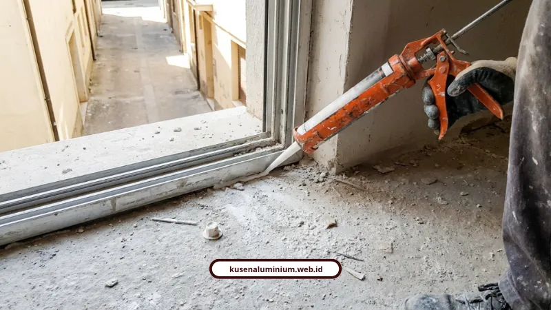
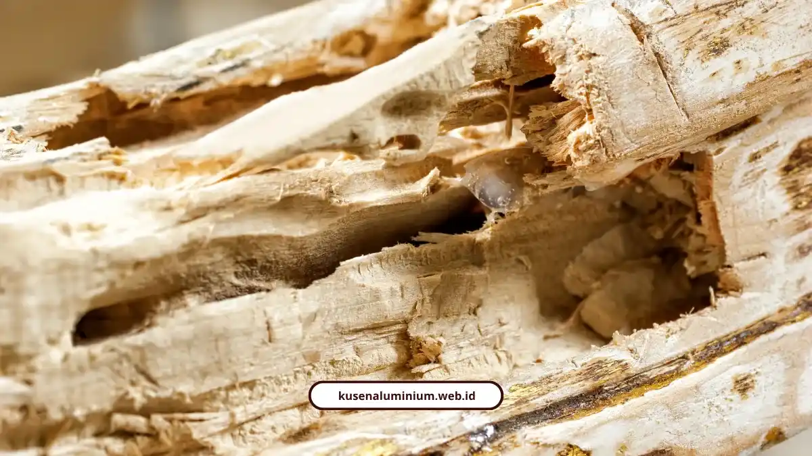

Jasa Kusen Aluminium Kab Malang, Presisi dan Anti Bocor

📌 Ringkasan Inti
Ringkasan layanan fabrikasi dan instalasi kusen aluminium presisi anti bocor untuk wilayah Kabupaten Malang, Kota Batu, dan Kota Malang:
- Sambungan miter 45° presisi workshop dengan toleransi ketat hingga 0,5 mm untuk hasil rapi tanpa celah kotoran.
- Perlindungan anti bocor triple-action: sudut miter rapat, karet weather-seal EPDM, dan sealant silikon kedap cuaca hujan ekstrem.
- Sistem prefabrikasi knock down modern: proses potong di workshop 3–7 hari kerja, pemasangan di lokasi cepat hanya 1–2 hari kerja tanpa merusak dinding.
- Pilihan profil fleksibel: Alexindo ekonomis (1,0–1,15 mm) hingga YKK AP premium (1,35–1,46 mm) berstandar SNI.
- Komitmen transparan: survei & pengukuran ulang gratis, RAB jujur tanpa biaya tersembunyi, serta sertifikat garansi resmi pengerjaan dan kebocoran.
- Kenapa kusen kayu cepat rusak di udara lembap?
- Apa bedanya kusen prefabrikasi dengan kerja langsung di lokasi?
- Bagaimana kusen aluminium bisa anti bocor?
- Profil 3 inci atau 4 inci, mana yang cocok?
- YKK AP atau Alexindo, apa bedanya?
- Berapa harga kusen aluminium per meter?
- Model apa yang populer untuk villa dan rumah?
- Apa kata pelanggan yang sudah memakai?
- Siapa yang memasang dan apa garansinya?
- Kusen presisi tanpa drama kebocoran
Jasa kusen aluminium Kab Malang ini memakai sambungan miter 45° dengan toleransi 0,5 mm. Melayani Kabupaten Malang, kami menyertakan karet EPDM dan garansi kebocoran resmi.
Angka toleransi, harga per meter, dan kekurangan yang jujur kami sebutkan ada di bawah. Jadi Anda bisa menghitung sendiri sebelum memesan.
Kenapa kusen kayu cepat rusak di udara lembap?
Kusen kayu lapuk dan diserang rayap karena kelembapan tinggi. Kusen aluminium tidak lapuk, tidak dimakan rayap, dan tidak memuai atau menyusut ekstrem.
Pemilik rumah tua yang kusennya keropos biasanya sekalian merombak tampilan rumah menjadi minimalis modern. Kawasan sejuk, lembap, dan berhujan tinggi seperti Kota Batu membuat kusen kayu rentan bermasalah.
Wilayah layanan kami:
- Melayani Kabupaten Malang, termasuk kebutuhan kusen anti bocor Kepanjen dan sekitarnya
- Melayani Kota Batu, meliputi Kecamatan Batu, Bumiaji, dan Junrejo
- Melayani Kota Malang
Apa bedanya kusen prefabrikasi dengan kerja langsung di lokasi?
Kusen prefabrikasi dipotong di workshop dengan mesin miter presisi tinggi selama 3-7 hari kerja, lalu terpasang di lokasi hanya dalam 1-2 hari kerja. Toleransi potongnya hingga 0,5 mm.
Karena pemotongan selesai di workshop, pemasangan berjalan cepat dan tidak merusak dinding. Pengerjaan kasar di lokasi proyek kami hindari.
Jujur saja, ada harga yang dibayar: Anda harus menunggu produksi 3-7 hari kerja. Kusen prefabrikasi tidak bisa dadakan.
Ukuran juga terkunci begitu profil terpotong, sehingga survei dan pengukuran ulang di lokasi kami gratiskan. Alur potong di workshop lalu rakit di lokasi ini dikenal sebagai sistem kusen aluminium knock down, lengkap dengan hitungan biaya per bukaan.

Bagaimana kusen aluminium bisa anti bocor?
Kusen aluminium anti bocor karena tiga hal: sudut miter 45° yang rapat tanpa celah, karet EPDM, dan sealant silikon kedap air hujan.
- Miter 45° rapat: sambungan tanpa celah tidak menyimpan kotoran dan tidak mudah bocor.
- Karet weather-seal EPDM: menahan air hujan, meredam suara, dan menahan angin kencang khas kawasan pegunungan.
- Sealant silikon: menutup sambungan yang tersisa supaya tetap kedap.
M. Rizal Ayuby, spesialis dan penulis industri aluminium, menjelaskan bahwa di kawasan pegunungan atau berudara lembap, profil tebal 1,35 sampai 1,46 mm dengan sealing EPDM sangat vital. Fungsinya menjamin ketahanan air hujan, mencegah kebocoran, dan meredam hawa dingin jangka panjang.
Hasilnya adalah instalasi tahan cuaca. Ketahanan ini bukan kebetulan, sebab tiap kusen harus lolos pemeriksaan dimensi dan finishing sebelum menjadi kusen tahan cuaca hujan yang siap kirim.
Jasa Pasang Kusen Aluminium Kabupaten Malang
Layanan fabrikasi presisi workshop dan pasang rapi anti bocor untuk rumah, villa, & ruko di Kab. Malang, Batu, dan Kota Malang. Dilengkapi karet EPDM, survei gratis, RAB transparan, dan garansi resmi.
Profil 3 inci atau 4 inci, mana yang cocok?
Profil 3 inci cocok untuk pintu dan jendela rumah minimalis standar. Profil 4 inci cocok untuk bukaan tinggi, gedung komersial, atau ruko.
- Profil 3 inci: ramping dan ekonomis.
- Profil 4 inci: frame lebih tebal dan kokoh.
YKK AP atau Alexindo, apa bedanya?
YKK AP berkelas premium dengan ketebalan profil 1,35 sampai 1,46 mm. Alexindo berkelas menengah dengan ketebalan 1,0 sampai 1,15 mm.
- YKK AP: sealing rapat, kedap suara maksimal, tahan korosi di lingkungan lembap. Kekurangannya, harganya lebih tinggi.
- Alexindo: keseimbangan antara kekuatan struktur dan efisiensi anggaran.
- Forta, Superex, dan Alfalum: pelengkap berstandar SNI untuk proyek yang variatif.
Berapa harga kusen aluminium per meter?
Kusen Alexindo berkisar Rp150.000 sampai Rp250.000 per meter lari. Kusen YKK AP berkisar Rp250.000 sampai Rp350.000 per meter lari, tergantung ukuran profil dan finishing.
Kusen dihitung per meter lari (m'), sedangkan kaca dihitung per meter persegi (m²). Tidak ada biaya tersembunyi dalam RAB kami.
Hitung angka untuk rumah Anda lewat Kalkulator Estimasi Biaya di website kami.
Model apa yang populer untuk villa dan rumah?
Model yang populer adalah pintu lipat heavy-duty, jendela casement, jendela sliding 2 daun, dan jendela slim frame berkaca besar.
- Pintu lipat (folding door) heavy-duty: bukaan maksimal untuk teras atau pembatas taman, dengan roda stainless steel anti-selip.
- Casement dan sliding 2 daun: penguncian crescent lock rapat, engsel kokoh anti-kendur.
- Slim frame kaca besar: cahaya alami maksimal dan tampilan modern.
Pilihan warnanya: hitam anodized atau doff untuk gaya industrial, putih coating untuk gaya Skandinavia, cokelat dark dan urat kayu untuk nuansa hangat tanpa risiko dimakan rayap, serta silver anodized.
Tim Ahli Renovasi Dewape Design menyoroti pemilihan aksesoris stainless steel pada handle dan kunci supaya tahan karat.
Apa kata pelanggan yang sudah memakai?
Ini ulasan dari pelanggan yang sudah memakai kusen kami:
- Maya Sari, pemilik rumah di Batu: "Renovasi rumah lama kami menjadi tampak modern seperti rumah baru! Tim sangat profesional, cepat, dan harga kompetitif. Sudah 3 tahun dan kualitasnya tetap terjaga."
- Pemilik villa di Batu: "Pemasangan pintu lipat aluminium YKK AP di villa Batu sangat presisi. Rel lancar, rapi, dan benar-benar kedap dari hawa dingin luar."
- Rizky Hermawan, Manager PT Maju Bersama: "Proyek kantor kami selesai dengan kualitas luar biasa. Transparansi RAB dan laporan progres berkala membuat kami tenang selama proses pembangunan berlangsung."
- Andi Pratama, pengusaha di Malang Raya: "Rekomendasi aplikator terbaik di Malang Raya! Konsultasi gratis sangat membantu, tim teknis memahami kebutuhan dengan baik, dan hasil akhir melebihi ekspektasi kami."
Siapa yang memasang dan apa garansinya?
Pemasangan dikerjakan oleh teknisi kusen Kab Malang dari tim kami, dengan pengalaman lebih dari 10 tahun dan lebih dari 500 bukaan terpasang di Malang Raya.
- Survei lokasi dan pengukuran ulang gratis, di Kota Batu, Kota Malang, dan Kabupaten Malang
- RAB transparan tanpa biaya tersembunyi
- Sertifikat garansi resmi untuk kebocoran dan fungsi kuncian
- Pengiriman dan pemasangan langsung ke lokasi proyek
"Presisi pengerjaan kusen harus dimulai dari meja fabrikasi workshop. Sambungan miter 45 derajat yang rapat dengan sealing EPDM adalah kunci utama kepuasan dan ketahanan cuaca di Malang Raya."
Kusen presisi tanpa drama kebocoran
Jasa kusen aluminium Kab Malang dari kami bertumpu pada satu prinsip: presisi dikerjakan di workshop, bukan ditambal di lokasi. Miter 45°, karet EPDM, dan sealant silikon bekerja sama menahan hujan dan hawa dingin.
Satu catatan jujur: produksi butuh 3-7 hari kerja. Sebagai gantinya, pemasangan hanya 1-2 hari dan hasilnya bergaransi.
Lihat hasil pengerjaan nyata di Galeri, lalu hitung kebutuhan Anda di Kalkulator Estimasi Biaya. Pesan jasa kusen aluminium melayani Kabupaten Malang langsung lewat WhatsApp resmi di kusenaluminium.web.id.
FAQ Seputar Jasa Kusen Aluminium Kab Malang
Pembuatan di workshop memakan 3-7 hari kerja, lalu pemasangan di lokasi selesai dalam 1-2 hari kerja. Total waktu bergantung pada jumlah bukaan.
Ya. Survei lokasi, pengukuran ulang, dan konsultasi spesifikasi gratis untuk wilayah Kota Batu, Kota Malang, dan Kabupaten Malang, dengan RAB tanpa biaya tersembunyi.
Kami memberikan sertifikat garansi resmi untuk kebocoran dan fungsi kuncian, juga garansi pengerjaan. Karet EPDM dan sealant menjadi dasar jaminan anti bocor.